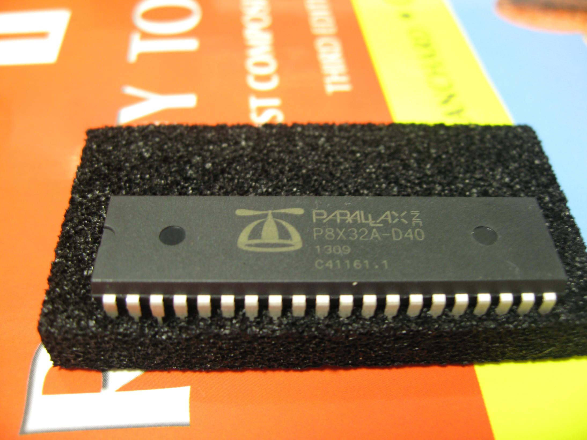
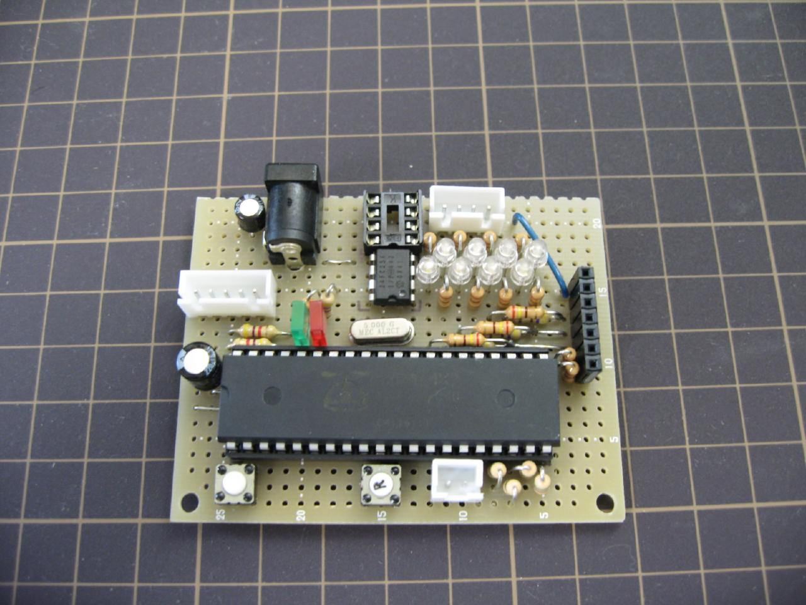
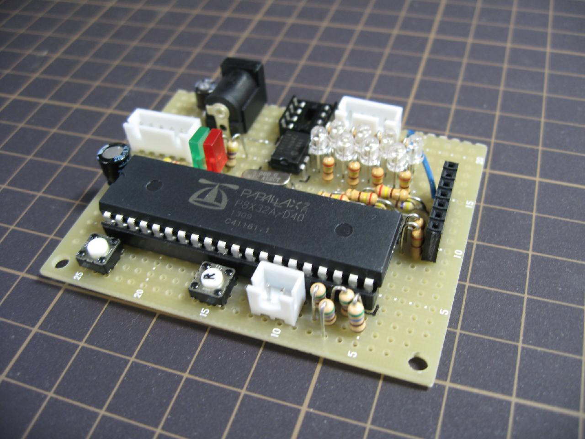
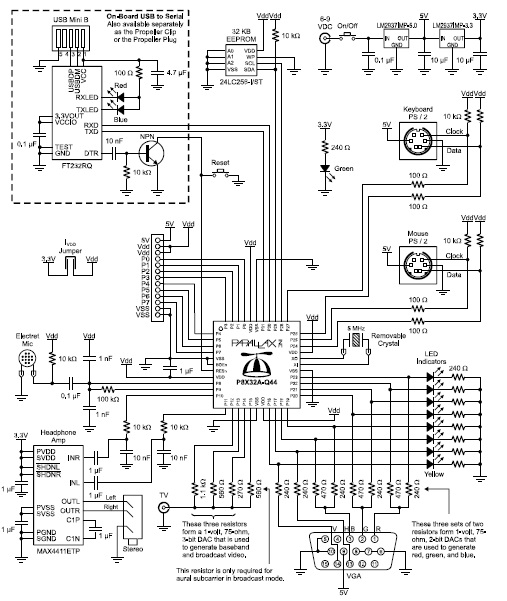
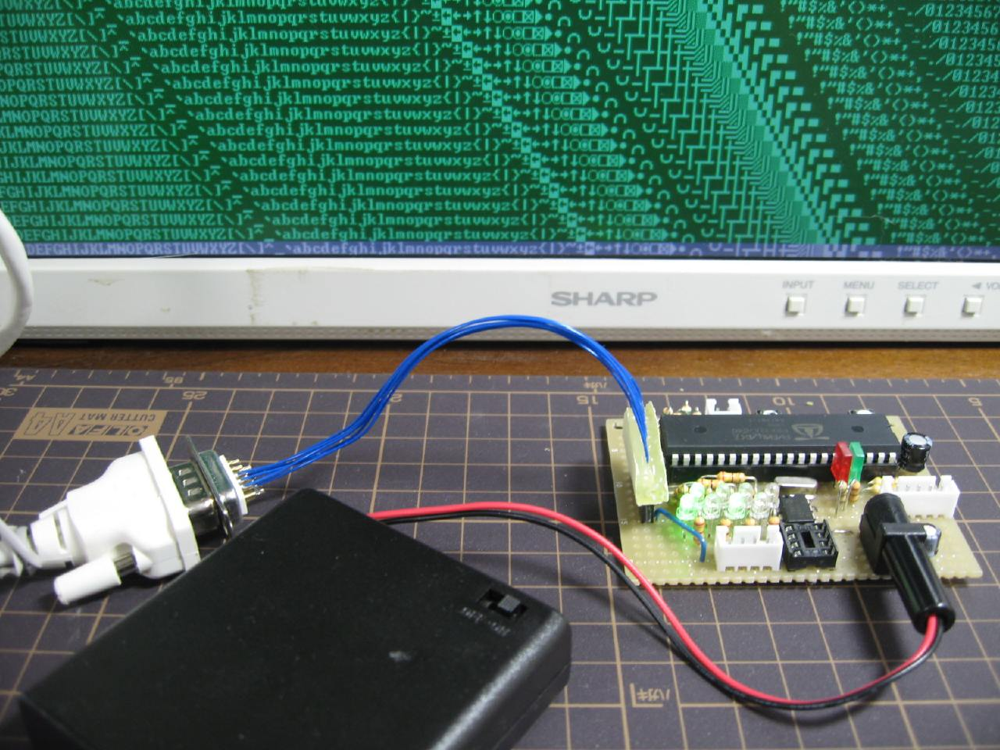

このページでは実際にPropellerマイコンを動かしてみようと思います。

これがPropellerマイコンDIP版です。DIPパッケージの中では二番目に大きい規格です。

これが私が作ったデモボードです。これでマウス VGA コンポジット（NTSC)が使えます。
さらに キーボード 音声出力 もありますが配線を出しませんでした。
手前のスイッチはそれぞれリセットと外部入力用です。

これが公式で推奨されています

これがPropellerのプログラム画面です。VGA_tile_driver_demo2.spinを開いています。

実際にプログラムを動かしているところです。VGA出力によりパソコン用のモニターにXGAの解像度で表示します。
マウス入力を受け付けておりポインターを動かせます。左クリックをするとカーソールを下部に表示し、右クリックである領域
を上にスクロールしながらランダムで文字を流していきます。
たったこれだけですが普通のマイコンでは実現しづらいリアルタイムな動作を簡単にできます。
戻る